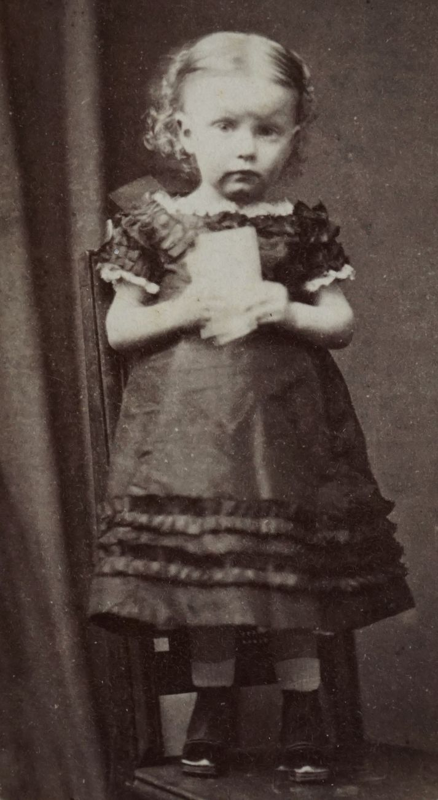
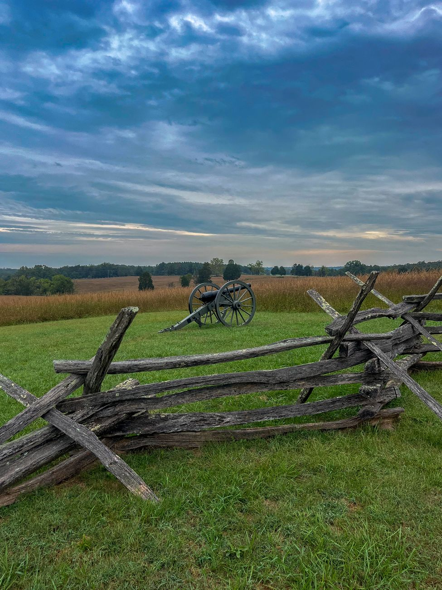

Season 1, Episode 6 — Mexico, 1846–1848

Grant and Lee met for the first time in Mexico. They were on the same side. Grant was a young quartermaster, undistinguished and unknown. Lee was on Winfield Scott's staff, already marked for greatness. Neither knew they would meet again eighteen years later at Appomattox — one to offer surrender, the other to accept it.
The United States invaded Mexico under President James K. Polk, who believed in Manifest Destiny and wanted California. The war had two main campaigns: Zachary Taylor in the north, invading from Texas, and Winfield Scott in the east, landing at Veracruz and marching inland to Mexico City. Most of the junior officers on both fronts were recent West Point graduates. The war was effectively a West Point reunion — and a training ground for the Civil War.
Of the 460 officers who would become generals in the Civil War, roughly 300 served in Mexico. They learned their trade together. They watched each other under fire. They formed friendships and rivalries that would determine the fate of the United States fifteen years later.
Scott's campaign was the more dramatic of the two: an amphibious landing at Veracruz, then a march through the mountains to capture the capital. It required engineering, logistics, and audacity — and it attracted the army's best talent.
Lee was assigned to Scott's staff as an engineer. His task was to find a way through the rugged mountains that blocked the road to Mexico City. At Cerro Gordo, Lee found a path — a narrow trail through the ravines that allowed the army to flank the Mexican defenses. The attack worked. Santa Anna's army was routed. Scott called Lee's scouting "the greatest feat of physical and moral courage I have ever known." Later, Scott said of Lee: "He is the very best soldier I ever saw."
Beauregard was also an engineer on Scott's staff. He and Lee worked together on the road to Mexico City. Beauregard was brilliant, ambitious, and thin-skinned — he later claimed credit for some of Lee's ideas. The two men would become rivals in the Confederacy, each believing he deserved more recognition than the other.
McClellan was a young engineer fresh out of West Point (Class of 1846). He served on Scott's staff alongside Lee and Beauregard. He learned engineering — bridge-building, road construction, siege operations. He also absorbed Scott's operational style: careful planning, overwhelming force, minimal risk. Later, as commanding general of the Union Army, McClellan would be criticized for being too cautious — the same caution he may have learned from the aging Scott.
Grant served in Taylor's army first, then transferred to Scott's. He was a quartermaster — responsible for supplies, not glory. He saw Lee from a distance at the Battle of Chapultepec and remembered it vividly. He also saw James Longstreet carried off the field, wounded. Grant was not on the staff. He was not a hero. But he was watching, and learning, and remembering everything.
Johnston served under Scott and was wounded in action. He and Lee were old friends from West Point (Johnston graduated a year ahead). In the Confederacy, Johnston would command the Army of Northern Virginia before Lee, and his bitter feud with Jefferson Davis would cripple Confederate command in the Western Theater.
Longstreet served as a lieutenant in the 8th Infantry. At Chapultepec, he was shot while carrying the regimental colors — a wound to the thigh that left him laid up for months. Grant was in Mexico when Longstreet was carried off the field. He remembered it. Longstreet recovered, returned to the army, and resumed his friendship with Grant.
Pickett graduated dead last in the Class of 1846 — but he served in the same division as Longstreet in Mexico. He distinguished himself at Chapultepec, where he was the first American soldier to scale the castle walls. His name would become attached to the war's most famous charge.
Taylor's campaign was smaller and more straightforward: invade from Texas, secure the border, fight defensive battles against Santa Anna's army. But it produced its own share of future legends.
Davis was not a West Pointer — he had resigned his commission years earlier — but he raised and commanded a volunteer regiment called the Mississippi Rifles. At the Battle of Buena Vista (1847), Davis's regiment held the line against a massive Mexican assault. The "Mississippi Rifles" became the heroes of the battle. Davis's reputation as a leader was made. He returned home a hero, was elected to the Senate, and eventually became President of the Confederate States of America.
Jackson served under Taylor as an artillery officer. He commanded a battery at Buena Vista and performed well. He and Lee were in different theaters — Jackson in northern Mexico, Lee in the east — but they may have crossed paths. Jackson returned from Mexico a hardened soldier, increasingly religious, increasingly eccentric. The war made him a killer and a zealot.
Every future commander came away from Mexico with something different — a lesson, a skill, a memory that would shape how they fought the Civil War.
Scott's flanking maneuver at Cerro Gordo taught Lee that boldness pays. When Scott sent Lee to find a path through impassable mountains, and Lee found one, the army won. Lee never forgot this lesson. In the Civil War, he would constantly seek the audacious move — the flank march, the risky attack, the battle that could be won by speed and surprise.
As a quartermaster, Grant learned how to move and supply an army. In the Civil War, this was his superpower. Grant understood that armies don't win battles — they win wars by being in the right place at the right time with enough food, ammunition, and medical supplies. His Vicksburg campaign, his Overland Campaign, his relentless pursuit of Lee — all of it depended on the logistical discipline he learned in Mexico.
McClellan learned engineering — bridges, roads, fortifications. He also learned caution. In the Civil War, he would be brilliant at organizing an army but paralyzed at using it.
Jackson learned how to use artillery effectively. At First Bull Run, his reputation was made when his brigade stood "like a stone wall" — but it was his understanding of artillery placement that made the stand possible.
Longstreet learned how to handle troops under fire. He was wounded carrying colors. He knew what it meant to be in the line. In the Civil War, he became the master of defensive infantry tactics.

The Mexican-American War was the crucible that forged the commanders of the Civil War
"The Mexican War was one of the most unjust ever waged by a stronger against a weaker nation." — Ulysses S. Grant, Personal Memoirs
Grant wrote those words years later, looking back. He knew the war was a land grab. He knew it was wrong. But he also knew that without Mexico, he would not have been the soldier who won the Civil War. The contradiction never left him.
Grant later wrote that knowing his Civil War opponents from Mexico was "of great advantage." He knew their personalities, their strengths, their weaknesses. He knew which generals would fight to the death and which would surrender when cornered.
The best example came early in the war. At Fort Donelson (February 1862), Grant faced Simon Bolivar Buckner — a fellow West Pointer he had known for years. Grant knew Buckner was a methodical, cautious commander. He knew Buckner would calculate the odds and choose surrender over annihilation. So Grant sent a famously blunt message: "No terms except unconditional and immediate surrender."
It was calculated. Grant was not being tough — he was being smart. He knew Buckner would accept. Buckner did. The phrase "Unconditional Surrender" Grant was born — and Grant became a national hero.
How this works: Work through each phase in order. Don't scroll ahead to the answers.
Which one does NOT belong?
Cover the answers below. For each clue, respond in the form of "Who is…" or "What is…". Answers are at the bottom of this page.
Phase 1 (Odd One Out):
Phase 2 (Core Jeopardy):
Phase 3 (Previously On… — Modules 1–5):
In Module 7: The Fracture (1856–1861), West Point tears apart. The army that trained together in Mexico splits down the middle. Friends choose sides. Lee wrestles with his loyalty to the Union. Grant comes home from California — alone, broke, and drinking. The cadets who graduate in 1861 will never serve in the same army. The fracture is coming, and no one can stop it.
The definitive book on how Mexico shaped the Civil War's commanders is Martin Dugard's The Training Ground: Grant, Lee, the Mexican War, and the Gateway to the Civil War. It traces the lives of the young officers who served together in Mexico and follows them to Appomattox.
For Grant's own account, his Personal Memoirs are essential reading — his chapters on the Mexican War are among the most vivid and morally conflicted passages in the book.
Have questions? Want to explore a specific battle — Chapultepec, Cerro Gordo, Buena Vista — in more detail? Just ask — I'm your teacher.